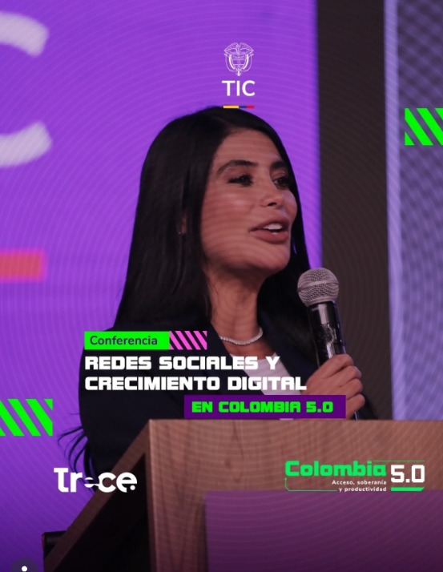
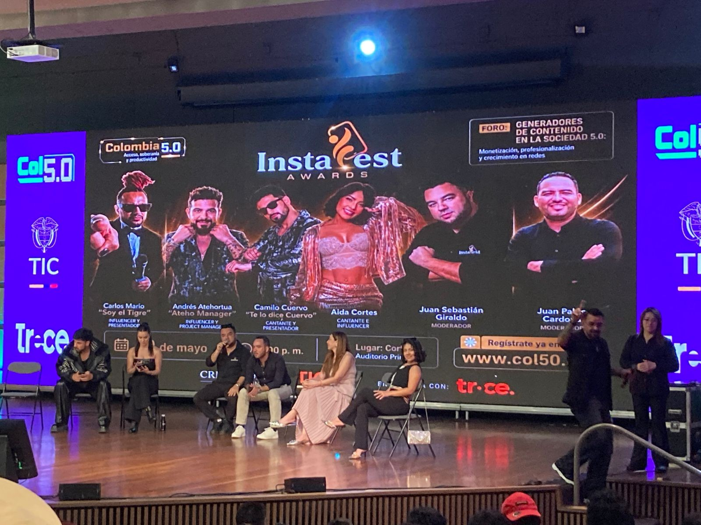
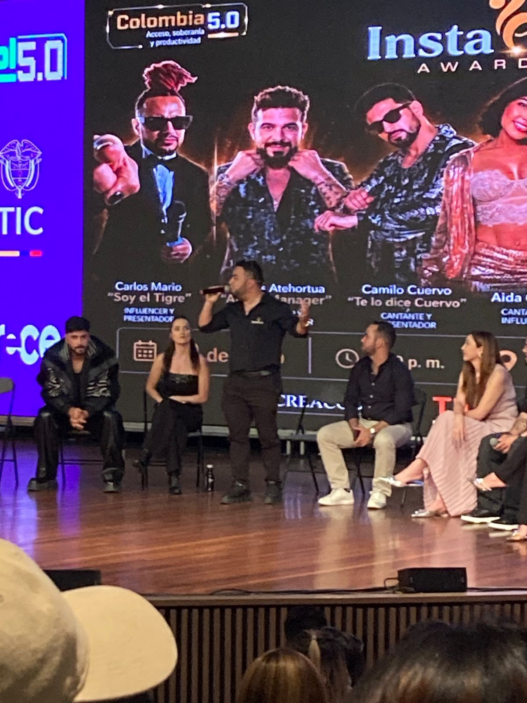
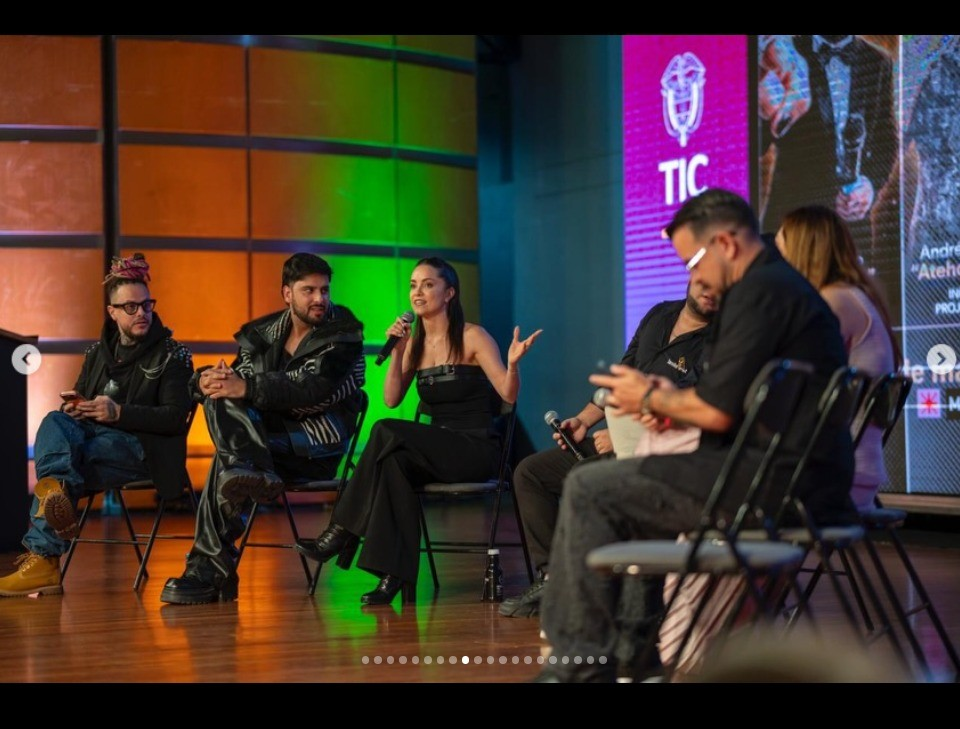
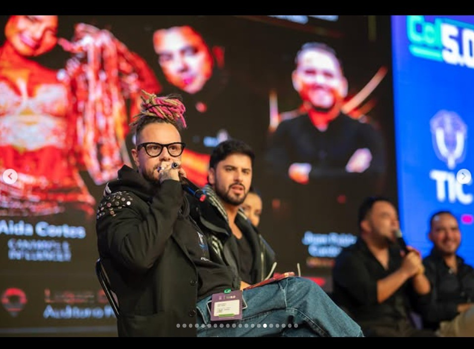

Estrategias para la creación de contenido, construcción de marca personal y generación de ingresos mediante plataformas digitales.
Abogado de formación y líder del ecosistema digital colombiano, reconocido por impulsar la profesionalización de los creadores de contenido y el crecimiento estratégico de las comunidades digitales.
CEO de Instafest Awards y fundador de CREACODI Asociación Gremial Nacional. Ha liderado iniciativas enfocadas en monetización, marketing digital, economía creativa y posicionamiento de marca personal.
Monetización, Profesionalización y Crecimiento en Redes Sociales.
Durante esta conferencia se compartieron estrategias para aprovechar el potencial de redes sociales como Instagram, TikTok, Facebook y YouTube.
Los expertos explicaron cómo construir una comunidad digital, generar contenido de valor y convertir una audiencia en una oportunidad profesional y económica. Las redes sociales se han convertido en un espacio donde el esfuerzo y la creatividad pueden generar grandes oportunidades.

Construcción de identidad digital sólida y diferenciada para destacar en el ecosistema de redes sociales.
Estrategias para generar contenido atractivo, de valor y con potencial de viralización.
Modelos de generación de ingresos en plataformas digitales: colaboraciones, membresías y productos propios.
Uso de IA para optimizar contenido, analizar audiencias y automatizar procesos creativos.




📹 Video del Evento
⭐ Video Destacado
Las redes sociales han evolucionado más allá del entretenimiento. Hoy representan una herramienta poderosa para emprender, educar, construir comunidades y generar oportunidades económicas mediante estrategias digitales innovadoras. La disciplina junto con un objetivo claro nos acerca aún más a estar al día de las innovaciones y desarrollos para aprovecharlos al 100%.